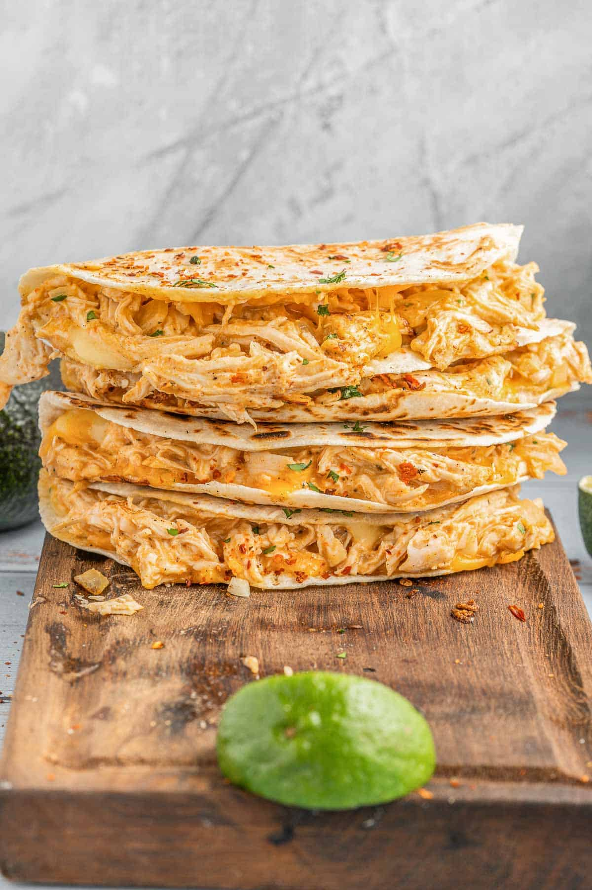

Buffalo Chicken Quesadillas

Description
Tangy barbeque sauce, tender shredded chicken, melty cheese, all wrapped up in a crispy tortilla. If that doesn't get your mouth watering I don't know what will. Read on to see how you can make these delicious quesadillas.
Ingredients
- 1 tablespoon olive oil
- 1 yellow onion, finely diced
- 1/2 teaspoon salt
- 2 cloves garlic, minced
- 1 pound chicken breast, cooked and shredded
- 1/2 cup ranch dressing
- 3 tablespoons buffalo wing sauce
- 2 teaspoons fresh cilantro, chopped
- 1/2 teaspoon black pepper
- 1 tablespoon lime juice
- 10 medium-size tortillas
- 1 1/2 cups each of cheddar and Monterey jack cheese, shredded
Steps
- In a medium skillet add olive oil and onion and saute for 5 minutes until onion is translucent. Add garlic and salt.
- Cook for an additional minute, stirring, until garlic is fragrant.
- Remove the skillet from stove and add chicken, buffalo sauce, ranch, cilantro, lime juice, and pepper. Mix to combine.
- Heat another medium skillet over medium heat.
- Place a tortilla in skillet and add a little of each cheese over one half of the tortilla.
- Fill the other side with the chicken mixture and fold the other cheese half over top of the chicken side.
- Heat just until the tortilla is golden brown on bottom. Carefully flip over and heat the other side the same.
- Serve warm and top with favorite toppings.